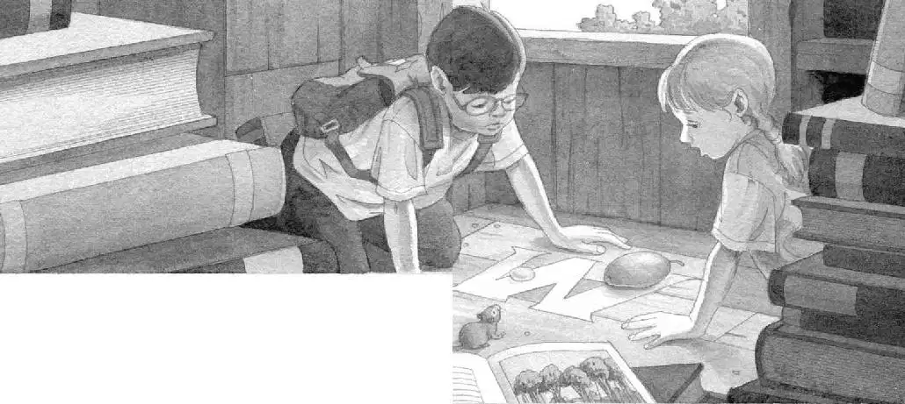
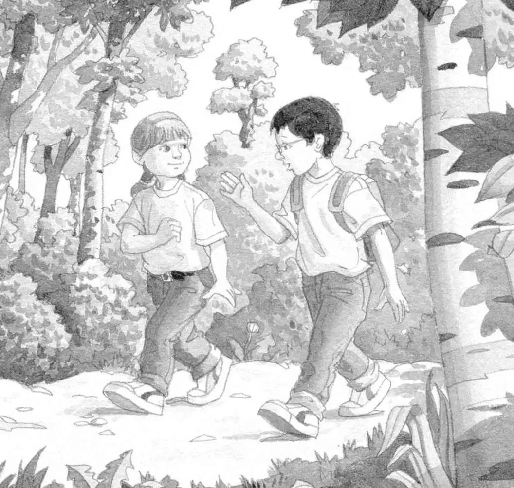

Squeak.
Jack opened his eyes. Peanut was on the tree house windowsill.
“We’re home,” said Annie.
Jack breathed a sigh of relief.
Annie held the fruit up to the afternoon light.
“What exactly is this?” she asked.
“Maybe it’s in the book,” Jack answered.
He pulled out the rain forest book. He flipped through the pages. He came to a picture of the red fruit.
“Here it is!” he said. He read out loud:
“The mango has a sweet taste like that of a peach.”
“Mango? Hmmm,” said Annie. She brought the fruit close to her lips.
“Hey!” said Jack, grabbing the mango from her. “We have to put it with the moonstone.”
Jack placed the mango on the M carved into the floor. Next to the clear moonstone.
“Moonstone…mango,” whispered Annie. It sounded like a spell.
“We’re halfway there,” said Jack. “Two more to go.”
“Then we can free you, Morgan!” Annie called, as if Morgan were nearby.
“How do you know she can hear you?” said Jack.
“I just feel it,” Annie said.
“Oh, brother,” said Jack. He needed more proof than that.
Squeak. Peanut was looking at Jack and Annie.

“We have to leave you now,” Jack said to the mouse.
Squeak.
“Can’t we take her with us?” said Annie.
“No,” said Jack. “Mom won’t let us keep a mouse in the house. She doesn’t like mice, remember?”
“How could anyone not like a mouse?” said Annie.
Jack smiled. “How could anyone not like a spider?” he said.
“That’s different.” Annie patted Peanut’s head. “Bye,” she said. “Wait for us here. We’ll be back tomorrow.”
Jack patted the mouse, too. “Bye, Peanut. Thanks for your help,” he said.
Squeak.
Jack put the rain forest book on top of the book about ninjas.
Then he pulled on his backpack. And he and Annie left the tree house.
They climbed down the rope ladder. They stepped onto the ground.
They started walking through the Frog Creek woods.

Leaf shadows danced in the light.
A bird called out.
These woods are very different from the rain forest, Jack thought.
“There’re no jaguars or army ants here,” he said. “No little monkeys.”
“You know, that monkey was never being mean,” said Annie. “He was just trying to give us the mango.”
“I know. Actually, nothing was being mean,” said Jack. “The army ants were just marching. That’s what army ants do.”
“The piranhas were just being piranhas,” said Annie.
“The snake was just being a snake,” said Jack.
“The crocodile was just being a crocodile,” said Annie.
“The jaguar was just taking care of her baby,” said Jack.
Annie shuddered. “I still don’t love bugs,” she said.
“You don’t have to love them,” said Jack. “Just leave them alone. And they won’t bother you.”
In fact, that’s true about the whole rain forest, Jack thought. Everyone should just leave it all alone.
“Who cares if the bugs don’t have names?” he said softly. “They know who they are.”
Jack and Annie stepped out of the Frog Creek woods.
They started walking up their street. It was lit with a golden light.
“Race you!” said Annie.
They took off running.
They ran across their yard.
They raced up their steps.
“Safe!” they shouted together, tagging their front door.